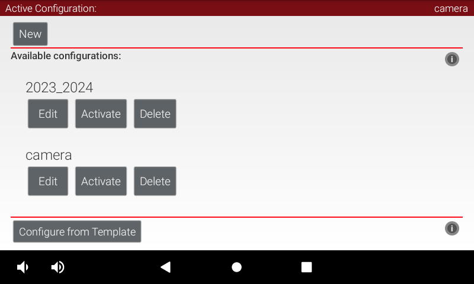
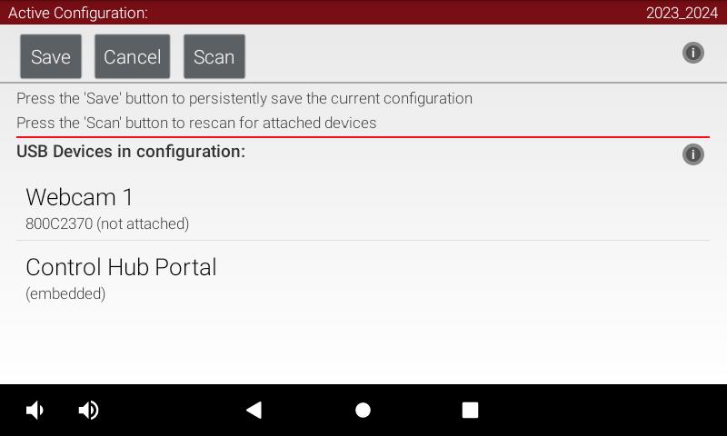
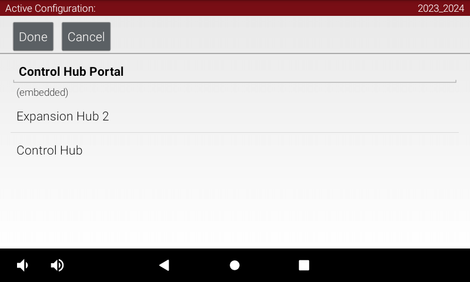
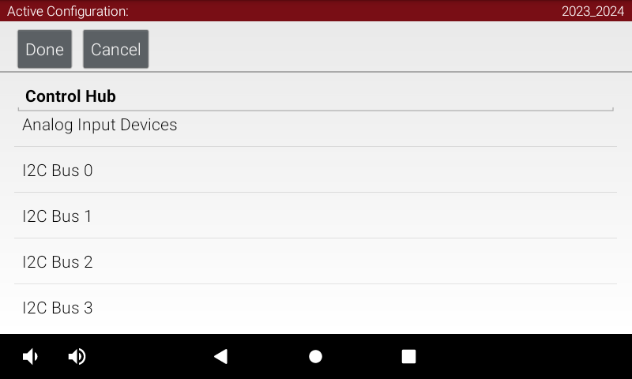
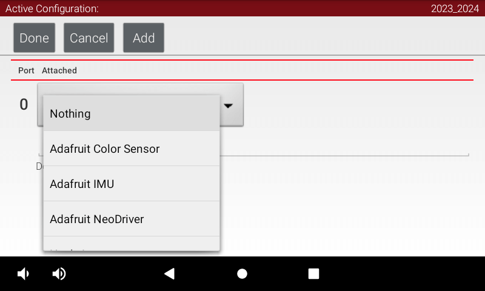
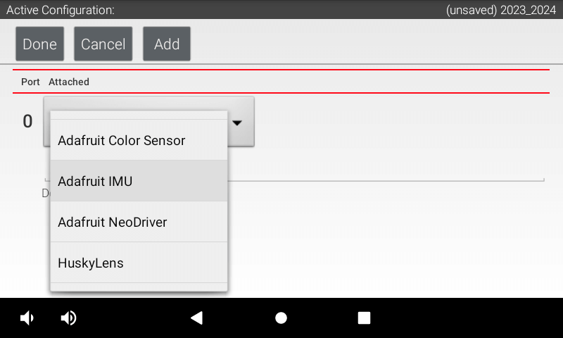
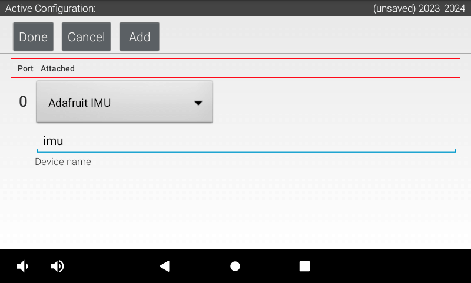

iMurdockUnit - An External IMU Enclosure
Background
The Problem
Over our first three competitions, team 10809 Crow Force sacrificed points during autonomous and tele-op when our robot became disoriented, causing failures in autonomous trajectory sequences and field-centric driver control. These failures seemed to coincide with collisions between exposed metal on our robot and other conductive objects on the field such as the 2023-'24 CENTERSTAGE™ game's truss supports and other robots.
By finding a way to reproduce failures with truss contact and then printing Inertial Measurement Unit (IMU) orientation telemetry to the driver hub, we observed our gyroscope and accelerometer readings drop to all zeros after metal contact that would persist until repowering the robot. After reading FIRST's article “Managing Electrostatic Discharge Effects”, we learned that these IMU flatlines could result from ESD: electrostatic discharge. The FIRST Tech Challenge Blog's 2023-11-21 post “Unexpected IMU Reset” lead us to suspect REV Robotics' 2022-09-23 IMU hardware changes made to REV-31-1595 Control Hubs. We tested this hypothesis by switching our robot's control hub with an older model and observing a reduction in IMU resets. Unfortunately, older generation control hubs are a luxury of established teams and they won't survive the playfield forever.
Note: To determine which type of IMU your control hub contains without knowing its manufacture date, see the control hub's web interface as explained by REV's IMU documentation.
Existing Solutions
If your robot suffers from similar IMU issues or other electrical failures that might be caused by ESD, try these existing solutions first. Combine them to build up “defense in depth”, layering redundant protections that are less likely to all fail at once.
-
Add a REV-31-1269 Resistive Grounding Strap between a spare XT30 connector and the metal chassis of your robot. The bump in the middle of this wire hides a resistor that lets accumulated electric charge safely trickle from the metal frame into your control and expansion hubs, lowering the voltage (difference in density of electric charge) between them.
Keep in mind that most extruded aluminum channel is “anodized”: coated in a non-conductive layer to prevent corrosion. Cut through it with a star washer or by scraping to make good electrical contact between the grounding strap's ring terminal and your robot's frame.

Cover exposed metal along the outside of your robot with an electrically insulating material where it could touch the truss or other robots. Metal-to-metal contact would allow electric charge to rush in or out of your robot's frame to balance with the other object.
Also cover any visible metal on wiring connectors and empty sockets with electrically insulating material like electrical tape. When the voltage between your robot's frame and its wiring grows too high, electricity can jump through the air one centimeter or more as a visible spark; This is the discharge of electricity that ESD refers to.
Update to REV's early-access Control Hub OS version 1.1.4 or newer, which claims to reduce the chance of IMU resets. This FIRST Tech Challenge Blog post from 2024-02-24 explains how to install the early-access version.
Our Solution
Once your team has applied the previous suggestions for mitigating static, your new control hub's IMU may still reset when shocked. Fortunately, external IMU sensor boards using the same chip as original control hubs can still be purchased! Read on for a simple guide to buying, assembling, attaching, and configuring a replacement IMU in a 3D-printed enclosure designed by team 10809 Crow Force and the mentors of Sage Creek High School.

{kind=link}
Design Goals
The external IMU's position and rotation are aligned with a hub's internal IMU except raised towards the iMurdockUnit by 27.2mm. Gyroscope readings will match the internal IMU without code changes, and accelerometer readings will only vary slightly while rotating.
The I2C sensor cable is strain-reliefed to prevent tugging on its soldered connections to the external IMU.
Hardware
Required Tools
To assemble an iMurdockUnit, you will use the following tools:
- 3D Printer
- Soldering Iron
- Wire Cutters
- Wire Strippers
Required Materials
One iMurdockUnit is made from the following components:
- Adafruit 2472: BNO055 IMU
Breakout Board
This sensor board features the same Bosch BNO055 IMU chip that previous generation control hubs included.

- Semi-Rigid 3D Printer Filament (such as PLA)
The printed part press-fits onto the top of a control or expansion hub, so more flexible plastics will conform and hold on better.
- REV Robotics
REV-31-1407-PK4 or Equivalent, ≥10cm
Only half of this sensor cable requires a JST PH4 connector to fit into the control or expansion hub's I2C ports; The other end will directly solder to the IMU breakout board. To simplify wiring with these instructions, find a cable that matches REV's sensor wire colors: blue (pin 1), white, red, black.

- 4× Button-Cap M4 Screws, ≥8mm
- 4× M4 Nyloc Nuts
- Super Glue
Assembly Instructions
Software
Driver Station
It is very easy to get your external IMU to talk to your robot controller. Below are instructions on how to configure the external IMU using your connected driver station.
Disable Internal IMU
First, disable the built-in internal IMUs from your control hub using a connected driver station:
-
At the driver station's main screen, tap the three-dots button at the top right and select “Configure Robot”.
 -
Tap the “Edit” button of your existing robot configuration.
 -
Tap the “Control Hub Portal” within your robot configuration to see its connected control and expansion hubs.
 -
Tap “Control Hub” to view categories of connected peripherals.
 -
Tap “I2C Bus 0” to configure sensors connected to the first communications channel. The control hub's internal IMU is hardwired to this I2C bus.
-
Look for any entries of “REV Control Hub IMU” and disable them by selecting “Nothing”.
Note: Do not add your external IMU on this I2C bus, since the unified
IMUinterface code for reading measurements will ignore your configuration and try to talk to the original internal IMU instead. See the next section for adding your external IMU to a different I2C bus.
Add External IMU
Second, add the new external IMU to a control or expansion hub:
-
Now go to I2C Bus 1 and add an “Adafruit IMU”.
 -
Name your external Adafruit IMU sensor to match how your code gets a reference to it (such as using
hardwareMap.getin Java). In the next section's code sample, we will use the name “imu”.
Sample Code
The code below shows how to setup your new IMU. Make the name of your imu matches the name in IC Bus 2 slot on your drive hub. Another thing to note is the Orientation we have given about our IMU. This changes depending on how you have your external IMU positioned.
package org.firstinspires.ftc.teamcode;
import com.qualcomm.hardware.rev.RevHubOrientationOnRobot;
import com.qualcomm.robotcore.eventloop.opmode.LinearOpMode;
import com.qualcomm.robotcore.eventloop.opmode.TeleOp;
import com.qualcomm.robotcore.hardware.IMU;
import org.firstinspires.ftc.robotcore.external.navigation.AngleUnit;
import org.firstinspires.ftc.robotcore.external.navigation.AxesOrder;
import org.firstinspires.ftc.robotcore.external.navigation.AxesReference;
@TeleOp(name = "External IMU Test", group = "Teleop")
public class ExternalIMU extends LinearOpMode {
public IMU imu;
public void runOpMode() throws InterruptedException {
//Set up external IMU from I2C bus 1
imu = hardwareMap.get(IMU.class, "imu");
IMU.Parameters imuParameters;
//Parameters for IMU
imuParameters = new IMU.Parameters(
new RevHubOrientationOnRobot(
//The iMurdockUnit holds its external IMU in the same orientation
//as an internal IMU, so you can copy your original values here.
RevHubOrientationOnRobot.LogoFacingDirection.UP,
RevHubOrientationOnRobot.UsbFacingDirection.BACKWARD
)
);
imu.initialize(imuParameters);
//Reset left-to-right rotation
imu.resetYaw();
waitForStart();
while (opModeIsActive()) {
telemetry.addData("🧭 IMU Rotation (degrees)", getAngle());
telemetry.update();
}
}
public double getAngle() {
return imu.getRobotOrientation(AxesReference.EXTRINSIC, AxesOrder.ZYX,
AngleUnit.DEGREES).firstAngle;
}
}